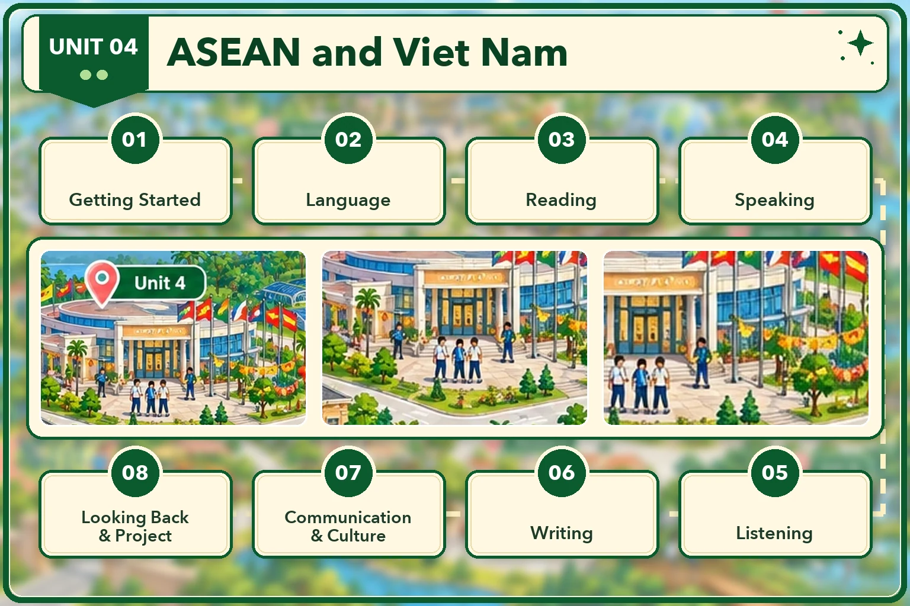

Lesson 1 · Getting started — At the ASEAN Youth Volunteer Programme office Lesson 2 · Language Lesson 3 · Reading: News items about ASEAN countries Lesson 4 · Speaking: Skills and experience for the ASEAN Youth Programme Lesson 5 · Listening: An ASEAN school tour programme Lesson 6 · Writing: A proposal for a welcome event Lesson 7 · Communication and Culture: New Year festivals in ASEAN Lesson 8 · Looking back and Project: Research about an ASEAN memberĐã dựng: Lesson 1, 2, 3, 4, 5, 6, 7, 8. Đủ cả 8 tiết. Dựng xong tiết nào thì mở khoá thẻ đó.